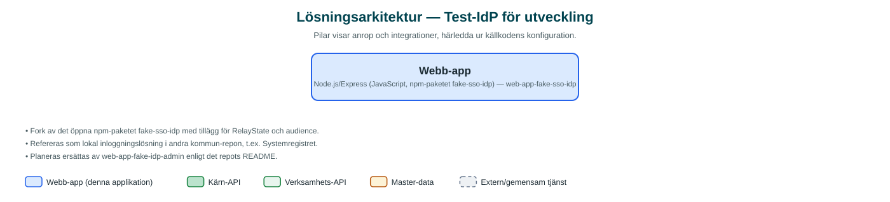

Test-IdP för utveckling
En enkel simulerad SAML-inloggningstjänst som utvecklare använder lokalt för att testa kommunens webbappar utan riktig inloggning.
Om applikationen
Det här är ett litet utvecklingsverktyg som härmar kommunens centrala inloggningstjänst (SAML SSO). När utvecklare bygger och testar webbappar lokalt pekar de appens inloggning mot detta verktyg i stället för den riktiga identitetsleverantören.
Testanvändare definieras i en konfigurationsfil med namn, lösenord och de attribut som apparna förväntar sig, och visas som valbara inloggningsalternativ. Verktyget är en vidareutveckling (fork) av ett öppet npm-paket, med stöd för bland annat RelayState och audience.
Verktyget är inte en tjänst för verksamheten eller invånare, och är på väg att ersättas av en nyare test-IdP med administrationsgränssnitt.
Det här stödjer applikationen
- Simulerad SSO-inloggning – Besvarar SAML-autentiseringsförfrågningar som en riktig IdP i utvecklingsmiljö.
- Konfigurerbara testanvändare – Testanvändare med attribut definieras i en enkel konfigurationsfil och listas som inloggningsval.
- Sessionshantering – Inloggningar sparas i session och kan göras direkt utan autentiseringsförfrågan.
- Körbar i Docker – Levereras med Dockerfile och miljövariabler för port, destination och metadata.
Teknisk dokumentation
Nedan beskrivs hur applikationen är uppbyggd, vilka API:er den använder och vad som krävs för att driftsätta den. Informationen är härledd ur källkoden och dess konfiguration på GitHub.
Arkitektur

Applikationen är en backendtjänst (Node.js/Express (JavaScript, npm-paketet fake-sso-idp)). Övriga integrationer som förekommer i koden: SAML (agerar IdP mot appars Service Provider).
Teknikstack
- Backend: Node.js/Express (JavaScript, npm-paketet fake-sso-idp)
- Test: Mocha
API-beroenden
Inga prenumerationer på kommunens API-plattform hittades i källkodens konfiguration.
Konfiguration och driftsättning
- Miljövariabler via envalid: PORT (standard 7000), HOST, DESTINATION, METADATA, BASEPATH, AUDIENCE, ENUMERATEUSERS
- Testanvändare i users-example.js / egen users-fil
- Dockerfile för containerkörning
Noterbart ur källkoden
- Fork av det öppna npm-paketet fake-sso-idp med tillägg för RelayState och audience.
- Refereras som lokal inloggningslösning i andra kommun-repon, t.ex. Systemregistret.
- Planeras ersättas av web-app-fake-idp-admin enligt det repots README.
Källkod
Källkoden är öppen och finns hos Sundsvalls kommun på GitHub. I källkodsförrådet finns även instruktioner för att klona, konfigurera och starta applikationen i egen miljö.